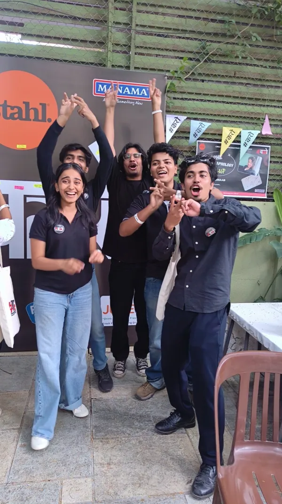
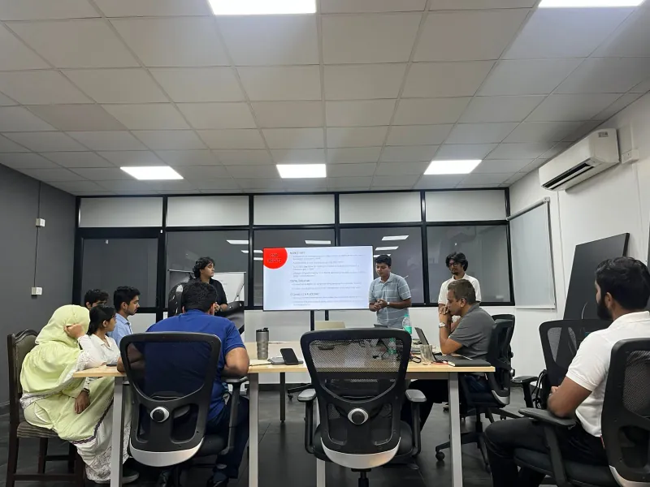
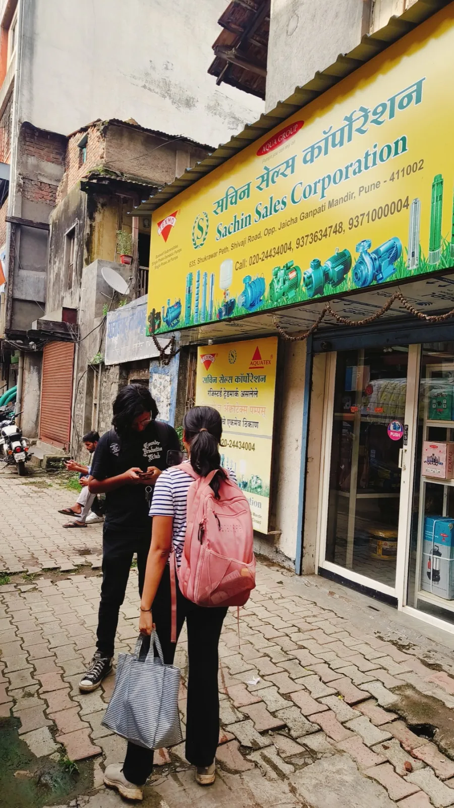

Read the buyer, then close the real hesitation.
Owned buyer diagnosis, recommendation, objection handling, and the close.
₹6L+50+ premium deals
View the sales-floor case SHARDUL GUPTA / SELECTED COMMERCIAL WORK
Five operating rooms, from a street cart to a founder's office — each with the work it produced and the numbers behind it.

00 · profile
I work where buyer behaviour, positioning, and execution meet.
That means tracing what customers say, locating the commercial constraint, and translating it into a message, recommendation, or operating system a team can use. The setting changes. The standard does not: make the next decision clearer.


01 · selected evidence
Selected for commercial relevance, personal ownership, and a traceable outcome.
Owned buyer diagnosis, recommendation, objection handling, and the close.
Owned the research instrument, five-city fieldwork, synthesis, and final recommendation.
Owned the ICP, prospecting, message tests, replies, qualification, and handover SOP.
Owned website, messaging, delivery visibility, and hiring. Contributed to platform GTM.
02 · projects
KOEL is the flagship project. The rest show earlier commercial range without competing for equal weight.
Five cities of raw customer signal, carried intact into a recommendation presented to the Managing Director.

03 · studio
Manager, Second Brain, ProofLog, and BrainDrop are working systems for operating cadence, memory, evidence, and capture.
04 · writing
Essays on agency, attention, and knowing when persistence has stopped being useful.
Featured essayPlaying With FreedomIdentity · agency · responsibilityRead the selected essays05 · contact
Founder-led work across positioning, buyer understanding, GTM, and revenue execution.
A project, a question, or something that is not working yet.